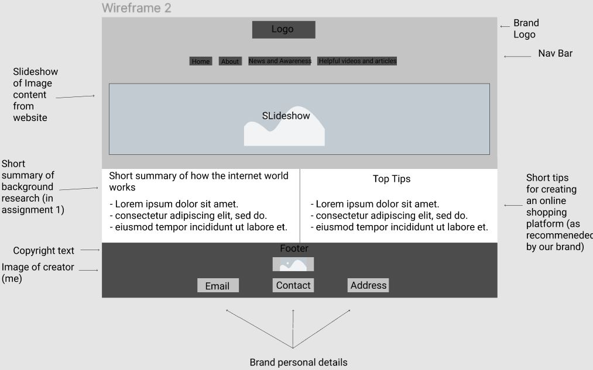
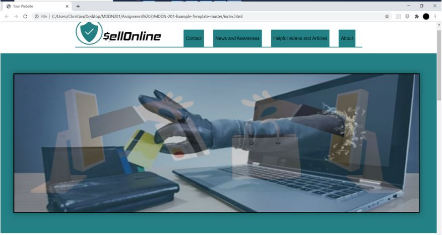
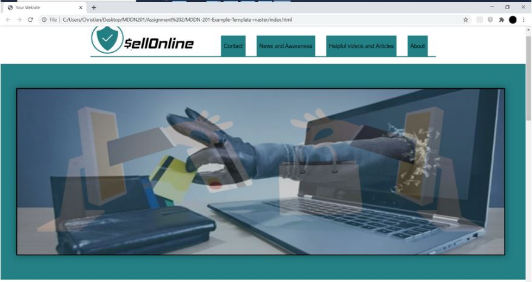

Planning and Ideation
Tuesday, August 18 2020
I commenced my project by first collecting all the relevant ideas that I would include In my project through my first assignment website (telling what I was going to include in my website and what it was going to be about) from which I knew my website for this assignment would need to be directed at information promoting the purpose of the website rather than including the background information of this websites content and brand creation (as I already included this in my first assignment). However, I did think that the “about” information was relevant in which I collected it for this assignment in an “about” page as most security informative online like mine (through research) I found use this in their website. A few about examples I researched can be found below:
The information I included from the “about” page on my website:
Thursday, August 20 2020
I then did some research into promoting the purpose of my brands’ website (to inform the user about ways in which when creating an online shopping platform, to eliminate the threat of hacking and what can be used to up the security on your website) as this would be the major selling point (or page) to my brand. I then had to figure out the best way to help and support the presentation of this new content and I decided that the best way to do this was by having a “videos and helpful articles” page that would withhold the researched content that I collected:
Monday, August 24 2020
As I needed at least one more page of related content so that my website doesn’t lack overall content, looking at the websites I researched for my “about” page, I found that a couple of them included a news/articles section of where they present news and/or articles about related incidents that have happened within their brand and outside of it to but still relating to the same purpose. I thought that this was something that I could implement into my website as an additional page and I would then go on to research and try to find news articles/reports in relation to cybersecurity awareness that would further promote the purpose/message of my brand and website. These articles can be found below:
Prototyping
Wednesday, 26 August 2020
I started out my prototyping by block framing my websites layout and through this seeing where all my elements should be placed. In this process what I did was create a few different layouts in order to see which one would enable better presentability as with all this researched content that I had collected in my ideation/collecting process, I did want to just throw it all into one section as this would cause users to not read it as they wont be bothered to read huge chunks of text.¬
Thursday, 27 August 2020
After making a few concepts for possible block frames so I could very roughly visualize how my content could look on a website I then progressed to do low-fidelity wireframes which I took all my and I started to add a little example text to try and more in depth contextually visualize where content could possibly go on these few block frames and which one could hold better presentability to the information that I add. These were fairly rough wireframes and I tried not to spend too much time on this part of the prototyping process as the next step was the high-fidelity wireframes where I really take time to add content, colour and typography in order to finalise a wireframe(concept) ready for development of my website.

Tuesday, 1st September 2020
Homepage
Carrying on from the low-fidelity wireframes, I continued on to make the high-fidelity wireframes from which I included all the components that I said that id do in my assignment one website in terms of the typography and I added all the content to help contextualise which would be my final wireframes before I pick one and get on to create my actual website. From the previous set of wireframes, I picked the first wireframe as I thought this looked more presentable in which I made a couple minor changes to that wireframe and used that same wireframe in three new concepts to test where my colours should go on the page. In this process, I also used all the proposed content in the right places and I also used my proposed font of Quicksand for all the text elements. I used my proposed colours in order to test the combinations in a few different concepts.
Subpage
I wanted to try and make my website in terms of its layouts to be as consistent as possible so that users are looking in similar places for certain types of information instead of having to keep looking in different positions across each page which can waste time for users and will eventually cause them to leave the website and not read the important bits of information which will demean the purpose of my website basically making it useless.
However, through prototyping this same theme layout on one of my subpages “news and awareness” which included a whole bunch of news and articles for users to read, this layout didn’t work to an extant as each section having their own article causes the page to be filled up to the extent that impresses on users with the overload of content which could deem to be “too much” for users making them too stressed with all the information. Therefore whilst trying to keep the similar “ header to footer” layout theme, I wanted to find a more efficient, less page consuming way, to include all the articles which would make the page more presentable and enhance readability and the best way I though to do this was include the articles in one section but making them external links, like a news website which also the World Wild life fund website implements.
Doing my wireframe for the “news and awareness” page, I also suddenly realized that I had to come up with news headlines to put on the front of the images so that the images look more like clickable articles/external links rather than just plain images to represent an aspect of a news article.
Development
Friday, September 4-5 2020
I started my Development process by getting the first page which was the homepage built as this would set the layout theme for the rest of the website so after this page was made, it would be easier to create all the other pages. To go forward from my previous wireframes, I went forward with the third wireframe in which I changed the colours around and made minor changes to the structure. I wanted to keep the shade of blue from the logo a very apparent and obvious main colour for the layout theme of my website and it stood out whilst also making elements very readable. I used visual studio code in order to code and design my website in which I used HTML/CSS and a little JavaScript for the slideshow which consisted of a few images from my websites’ content. While trying to implement specifically the Top Tips section on my homepage, I had to find a way to implement the boxes so they were inline and the same size as each other and after trying just the basic positioning and sizing bits of code which didn’t work, I found the best way to do this was to use Flexbox inside the sections’ div which helped to make the boxes presentable and in the desired position. As this worked so well, I thought I could also use Flexbox in my footer in order to get the left and right sides of the section looking presentable. (I also made a minor change to my footer from the wireframe picked by changing the layout of the contact details which suited the aesthetic of the footer better).
 


Monday, 7-8 September 2020
After creating the first part of my website (the homepage), I then went on to create the second part of my website (the about page). As I had already created the header, nav, and footer in my homepage, all I had to do was create the middles section with the about info which I had obtained from my first assignment website and I had come up with originally. I started this process off first with the creation of the introduction image and header for the section with an image I obtained from the slideshow and a simple header saying “About SellOnline”. I though that the simplicity of the header text being over the image was a bit too much so I wanted to add the text inside the image to make the image harmonize better with which I had to create a separate div class for the text and just like the slideshow div in relation to its images, I had to change the position attribute of the image to absolute and the header position attribute to relative as that how you can make text appear over images. After looking at it from afar I then realized that that text colour which I wanted it to be, was hard to see clearly over the image in which I decided to put a text-shadow so the black glow would make the text stand out to users. After this was done, I then added the text from my first assignment website and added a bulleted list (like my other website) so content is more presentable.
Tuesday, 8th September 2020
The was the third part of my development process for my website in which I was creating the Helpful Videos and Articles page which was probably the easiest process out of all the pages so far as all I had to do was use the same kind of layout of code I used for the first two pages and then paste the content that I had collected from my original research into individual sections that I created in addition to the code. The only real problem that I ended up running into was for some videos, especially the YouTube ones, they wouldn’t centre when I would use the “align: centre” piece of code in which I would have to create a separate frame div “iframe” around the videos and then in CSS I would have to use margin and display attributes to centre the image. Something which I added on as an additional attribute to the website but didn’t plan on was that I highlighted the article link with the blue colour from the logo just as an additional signal that the word is a clickable link which some users could miss even though its underlined.
Sunday, 13 September 2020
This was the last part of my development which I had to create the News and Awareness page, and this was probably the most lengthy process of the development process. As I wanted it to look exactly like my wireframe for this page (specifically), i had to break the process down into 4 chunks so that I could make building the page easier and the process more efficient for me. The first part was making the box that would surround the section that would hole all the images which are links to external news/reports websites, and this was important as without it, the images wouldn’t be kept together in one section. The second part was to determine the dimensions and positions of the images inside the large box and instead of wanting each image to be the same size and inline with each other like the navbar, I wanted to mix up the sizes of the images (like in my wireframe so its more interesting to look at this section for users. Part three was easy as it was all about placing the image and then the text over the image which I just followed the same process as for the about page to do. The last part was about enhancing usability by making the image opaque and giving the links underline on hover so that its more obvious to the user that they are clickable link (like in the news and awareness page).